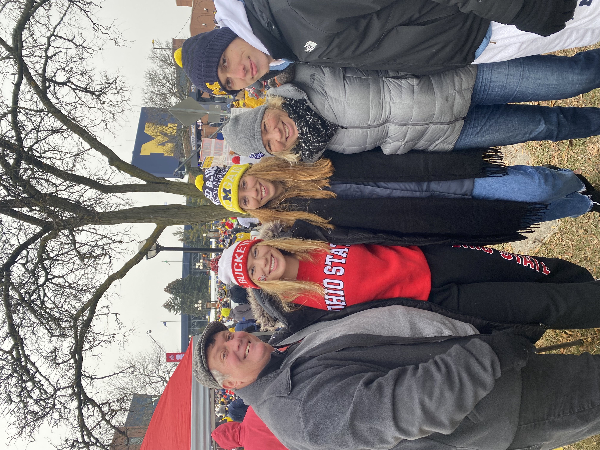
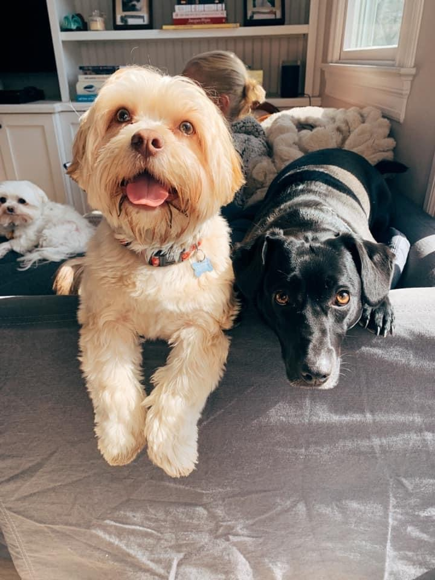

<!DOCTYPE html>
<html lang="en"></html>

<head>
    <meta charset="utf-8" />
    <meta name="viewport" content="width=device-width, initial-scale=1.0">
    <link rel="stylesheet" type="text/css" href="style.css">
    <title>Grace Brindle</title>
</head>

<body>
    <div class="skip"><a href="#main">Skip to Main Content</a></div>

    <header>
    <h1>Grace Brindle</h1>
    <nav>
        <ul class="nav_links">
            <li><a href="#aboutMe">About Me</a></li>
            <li><a href="#myFamily">My Family</a></li>
            <li><a href="#myDogs">My Dogs</a></li>
            <li><a href="#ps2">Problem Set 2</a></li>
        </ul>
    </nav>
</header>

    <main id="main">
        <section id="aboutMe">
            <h2>About Me</h1>
            
           <p> Hi! My name is Grace and I'm a first-year MSI student focusing on UX research at the University of
            Michigan. I just graduated from Carleton College in June with a major in History and a minor in the 
            Digital Arts & Humanities. </p>
            <p>In college, I specialized in Italian history and I wrote my <a href="comps.pdf">senior thesis</a> 
            on the Allied occupation of Sicily during World War II. I also wrote a lot about fascism and Mussolini, medieval
            Italian city-states, and historic urban planning projects in Italy. I studied abroad in Rome and I love eating pasta.</p>
            <p>In my free time, I really enjoy reading and watching movies and TV shows. Here are some of my favorites:</p>
            <ul class="bulleted_list">
                <li>Reservation Dogs</li>
                <li>What We Do in the Shadows</li>
                <li>Derry Girls</li>
                <li>The Sopranos</li>
                <li>Cobra Kai</li>
                <li>Love Island</li>
            </ul>
        </section>
        <section id="myFamily">
            <h2>My Family</h1>
            <p>I grew up in a suburb of north New Jersey with two younger siblings and a wide variety of pets. I 
                had frogs, hamsters, hermit crabs, snails, guinea pigs, fish, rats, a cat, turtles, and dogs. My 
                dad was a stay-at-home dad for most of my life and my mom became the mayor of my hometown when 
                I was a senior in high school (she was just re-elected for a second term). My sister studies business at Ohio State
                (I know) and my brother is a junior in high school.</p>
            <p>Together, my family and I love to eat a lot of great food, travel, and listen to music.</p>
            
        </section>
        <section id="myDogs">
            <h2>My Dogs</h2>
            <p>My family started fostering dogs in 2011 and we have had over 200 foster dogs in our home. Over the years, we have
            had six dogs ourselves. Our current dogs are Juno (5 years old) and Benny (3 years old).</p>
            
        </section>
        <section id="ps2">
            <h2><a href="ps2-tests.html">Part 2 Tests</a></h2>
        </section>

    </main>

    <footer>
        <p>Created by Grace Brindle</p>
        <p>SI 579: Winter 2022</p>
    </footer>
</body>

</html>
